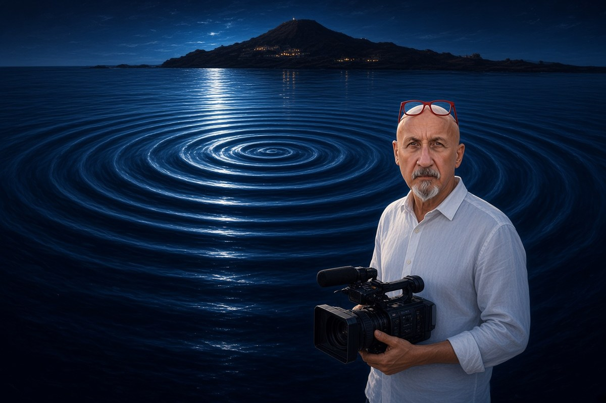

Cronaca · 24 ottobre 2026
Perché il terremoto delle Eolie non viene dai vulcani sommersi

Sotto il mare davanti ad Alicudi ci sono vulcani attivi, e la sequenza sismica in corso non li riguarda. Una faglia e un vulcano fanno tremare la terra in due modi diversi, e sugli strumenti lasciano due firme che i sismologi riconoscono a colpo d'occhio.
di Franco Zanghì
La sequenza sismica nel Tirreno meridionale va avanti dalla notte del 20 ottobre e ha superato le 100 scosse. La più forte è arrivata alle 12.19 di venerdì 23 ottobre: magnitudo 5.5, epicentro in mare a una ventina di chilometri a nord-ovest di Alicudi, ipocentro a 9 chilometri di profondità. Nel pomeriggio, alle 15.55, un'altra scossa forte, registrata come magnitudo locale 4.6 e poi rivalutata a magnitudo momento 5.0. Nella notte fra il 23 e il 24 se ne sono contate una trentina, fra magnitudo 2 e 3.4.
Ad Alicudi e a Filicudi la gente è uscita dalle case ed è rimasta in strada: dai costoni dietro i centri abitati si sono staccate porzioni di roccia. Le prime ricognizioni della protezione civile non hanno trovato feriti né danni agli edifici. Dopo la scossa delle 12.19 è scattata l'allerta maremoto arancione, cancellata poco più di un'ora dopo, quando i mareografi hanno escluso variazioni del livello del mare. A Palermo il sindaco ha chiuso scuole e sedi universitarie fino alle 8 di domenica 25 ottobre; l'Anas ha ispezionato ponti, viadotti e gallerie fra Palermo e Messina senza trovare criticità.
La domanda che gira sulle isole
Alle Eolie la domanda che circola davvero è un'altra, e non è sciocca: c'entrano qualcosa i vulcani sottomarini? Perché sotto quel mare ce ne sono. A una ventina di chilometri da Alicudi ci sono Eolo ed Enarete, più in là Sisifo, il più antico edificio dell'arco eoliano; a nord-est c'è il Marsili, che l'Istituto nazionale di geofisica e vulcanologia classifica come vulcano attivo. Le sette isole sono solo la parte emersa di un arco che continua sott'acqua per decine di chilometri, e gli studi hanno accertato acque e gas caldissimi dentro la roccia di Eolo e di Enarete.
Non sono rilievi spenti, e la domanda è legittima. La risposta è che un vulcano e una faglia fanno tremare la terra in due modi diversi, e servono due immagini per capirlo.
Il masso che si spacca
La prima è un masso enorme che milioni di anni fa si è spaccato in due. Quella spaccatura è la faglia. Da allora le due metà sono due blocchi appoggiati l'uno all'altro lungo una superficie irregolare, piena di sporgenze che si incastrano. La forza che ha prodotto la rottura non si è mai fermata, perché è il movimento delle placche, e quella linea resta il punto più debole: la spinta scarica sempre lì. È il motivo per cui i terremoti si ripetono negli stessi posti.
I blocchi però non scivolano lisci. L'attrito li tiene fermi, la roccia si carica come una molla per anni, finché una sporgenza non regge più e si sbriciola: quello scatto è il terremoto, e dura pochi secondi. Siccome le facce sono irregolari, il primo strappo non risolve niente, e restano incastri minori in tensione che cedono nelle ore successive. Sono le repliche che continuano davanti ad Alicudi.
È quello che dicono gli istituti. Fabio Florindo, presidente dell'Ingv, parla di tensioni accumulate nella crosta dal movimento della placca africana contro quella euroasiatica, ed esclude il Marsili: per la distanza, e perché quel vulcano si è formato dove la crosta si apre, mentre qui due porzioni di crosta si spingono l'una contro l'altra. Mimmo Palano, dell'Università di Palermo, indica una faglia lunga una trentina di chilometri lungo cui i blocchi scorrono di lato, nella fascia fra Ustica e le Eolie che assorbe quella spinta.
La bottiglia e il tappo
La seconda immagine è una bottiglia. Il magma che risale porta con sé gas disciolti, come l'anidride carbonica in una bottiglia chiusa: quando la pressione cala, i gas diventano bolle. Tutta la differenza fra un vulcano che sbuffa e uno che distrugge una città sta in una domanda: quelle bolle riescono a uscire, o trovano la strada chiusa? Un magma fluido le lascia passare; uno denso le trattiene, la pressione sale e la roccia raffreddata nel condotto fa da tappo. Più il tappo è stretto, più forte è il botto.
L'Etna sta all'estremo tranquillo, magma fluido e condotto aperto: quel pennacchio bianco sulla cima è il vulcano che respira. Il Vesuvio del 79 dopo Cristo è l'estremo opposto: magma denso, condotto chiuso da secoli, una pressione accumulata tanto a lungo che quando il tappo ha ceduto è esploso tutto insieme. Ed è per quel condotto ostruito che oggi è considerato più pericoloso dell'Etna, pur essendo fermo dal 1944.
Quando gli esperti dicono che quello davanti ad Alicudi non è un terremoto vulcanico, dicono una cosa precisa, non una formula di rito. Un terremoto vulcanico ha la firma delle bolle: scosse piccolissime, tantissime, nei primi chilometri sotto il cratere, con il terreno che si gonfia e i gas che cambiano. Quello del 23 ottobre ha la firma del masso che si spacca: un unico strappo a 9 chilometri di profondità, seguito dalle repliche.
L'isola che durò pochi mesi
I terremoti non si prevedono. Si sa che quella zona è fra le più pericolose d'Italia, ma sapere che una zona è pericolosa non è una previsione. Anche per i vulcani gli strumenti descrivono scenari possibili, non date.
Resta la domanda di tutti: dal mare può spuntare un'isola nuova? In teoria sì, ma il Marsili ha ancora 500 metri d'acqua sopra la cima e per i suoi 3.000 metri ci ha messo circa un milione di anni. Un'isola nata dal mare, però, c'è stata davvero.
Nel luglio del 1831, nel Canale di Sicilia fra Sciacca e Pantelleria, un'eruzione sottomarina ne fece emergere una. Durò pochi mesi, e mise tre potenze l'una contro l'altra: gli inglesi ci piantarono la bandiera e la chiamarono Graham, i francesi Giulia, Ferdinando II di Borbone mandò una nave, la chiamò Ferdinandea e scrisse a Londra e a Parigi che quella terra era sua. Mentre le cancellerie si scambiavano memorie, il mare erodeva la roccia friabile di cui era fatta: a dicembre non c'era già più.
Qui davanti alle Eolie è un altro mare. Non c'è magma che sale: ci sono due blocchi di roccia che si sono mossi, come fanno da sempre. E il motore non si è acceso adesso: è lo stesso che in centinaia di migliaia di anni ha costruito le isole su cui vive la gente scesa in strada il 23 ottobre.
Fonti
- Istituto nazionale di geofisica e vulcanologia, dati della sequenza sismica del Tirreno meridionale, 20-24 ottobre 2026
- Il Mattino, intervista a Fabio Florindo, presidente dell'Ingv, 23 ottobre 2026
- PalermoToday e Balarm, interviste a Mimmo Palano, Università di Palermo, 23 e 24 ottobre 2026
- BlogSicilia, Manlio Viola, «Terremoto nel Tirreno, lo sciame sismico prosegue per tutta la notte: oltre 100 scosse in totale», 24 ottobre 2026
- Tp24, «Trema la Sicilia: a Palermo scuole e università chiuse fino a domenica», 24 ottobre 2026, per l'ordinanza del Comune, le verifiche dell'Anas e la revoca dell'allerta maremoto
- Agi, «Terremoto oggi in Sicilia, sciame nella notte: i dati dell'Ingv», 24 ottobre 2026
- Protezione civile regionale siciliana, avvisi sismici e prima ricognizione dei danni, 23 e 24 ottobre 2026
- Consiglio nazionale delle ricerche con le Università di Messina e Palermo, studi sull'assetto tettonico fra Eolie e Ustica
- Lupton e altri, «Active hydrothermal discharge on the submarine Aeolian Arc», 2011, per l'attività idrotermale su Marsili, Enarete ed Eolo
La sequenza sismica è in corso alla data di pubblicazione: numero delle scosse, magnitudo e provvedimenti dei Comuni possono cambiare. Lo stato di attività di Eolo, Sisifo ed Enarete è attribuito agli studi sull'arco eoliano del 2007; in questi giorni il geologo marino Salvatore Passaro, del Consiglio nazionale delle ricerche, ha dichiarato che su quegli edifici non si hanno informazioni aggiornate. La faglia all'origine della sequenza non è stata ancora individuata in via definitiva.